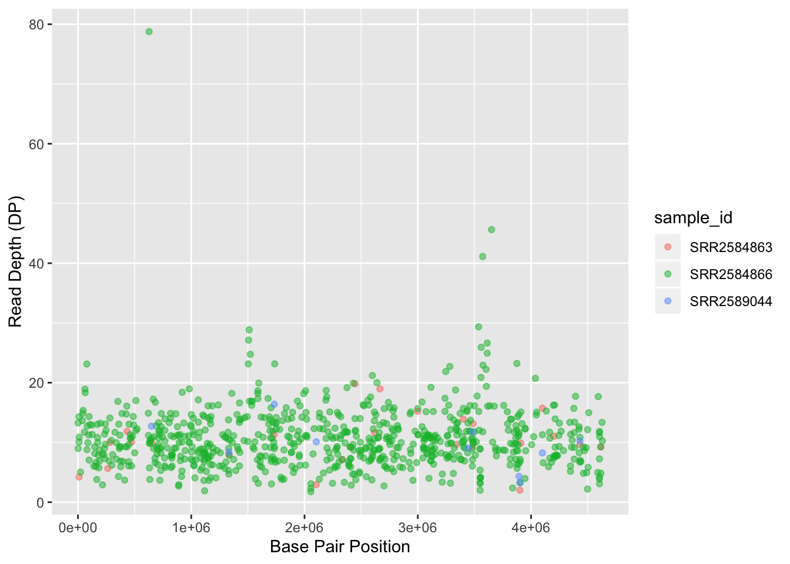
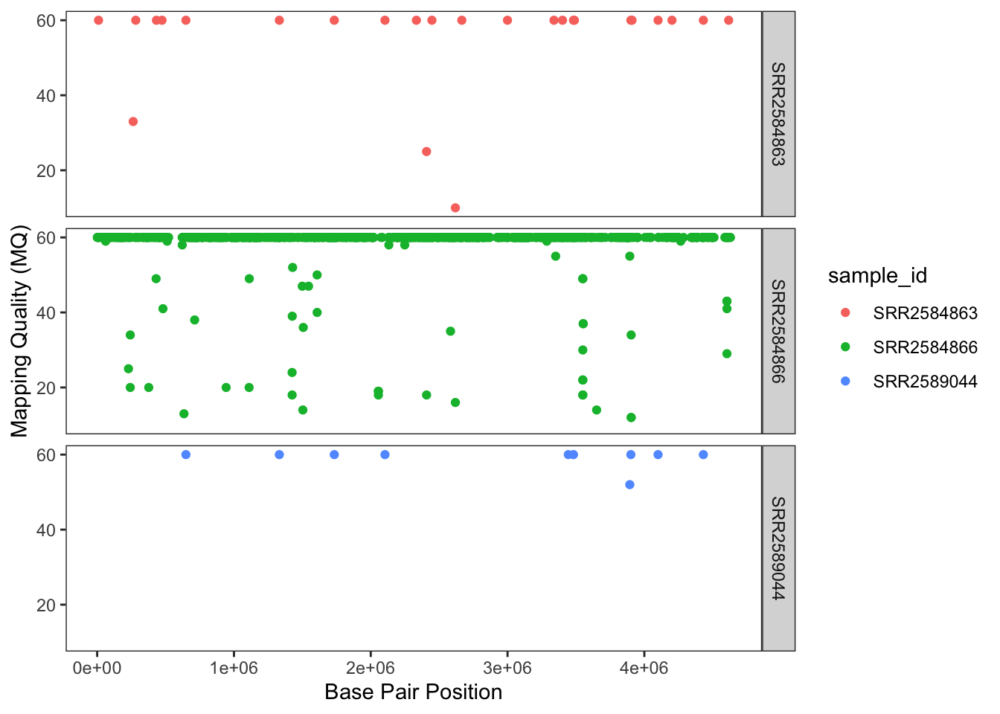
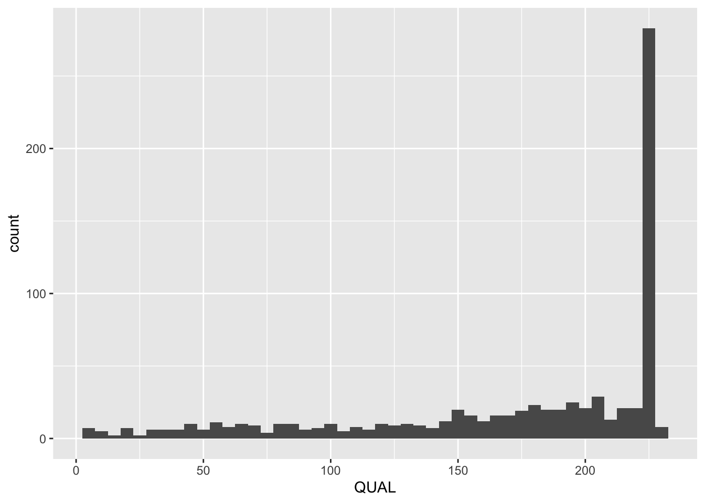

9 Data Visualization with ggplot2
9.1 Data
This section uses a different data set from the same experiment - the LTEE (long-term evolution experiment). This data was pulished in: Tempo and mode of genome evolution in a 50,000-generation experiment Tenaillon et al 2016.
Download the data onto your computer from this dropbox link and move it into the data directory of your RStudio project.
EXERCISE
Read the data into R. Call this data variants. Ensure that you have read the data in by calling head(variants).
You can further investigate the structure of the data frame using the str() function:
## 'data.frame': 801 obs. of 29 variables:
## $ sample_id : Factor w/ 3 levels "SRR2584863","SRR2584866",..: 1 1 1 1 1 1 1 1 1 1 ...
## $ CHROM : Factor w/ 1 level "CP000819.1": 1 1 1 1 1 1 1 1 1 1 ...
## $ POS : int 9972 263235 281923 433359 473901 648692 1331794 1733343 2103887 2333538 ...
## $ ID : logi NA NA NA NA NA NA ...
## $ REF : Factor w/ 59 levels "A","ACAGCCAGCCAGCCAGCCAGCCAGCCAGCCAG",..: 49 33 33 30 24 16 16 33 2 12 ...
## $ ALT : Factor w/ 57 levels "A","AC","ACAGCCAGCCAGCCAGCCAGCCAGCCAGCCAGCCAG",..: 31 46 46 29 25 46 1 1 4 15 ...
## $ QUAL : num 91 85 217 64 228 210 178 225 56 167 ...
## $ FILTER : logi NA NA NA NA NA NA ...
## $ INDEL : logi FALSE FALSE FALSE TRUE TRUE FALSE ...
## $ IDV : int NA NA NA 12 9 NA NA NA 2 7 ...
## $ IMF : num NA NA NA 1 0.9 ...
## $ DP : int 4 6 10 12 10 10 8 11 3 7 ...
## $ VDB : num 0.0257 0.0961 0.7741 0.4777 0.6595 ...
## $ RPB : num NA 1 NA NA NA NA NA NA NA NA ...
## $ MQB : num NA 1 NA NA NA NA NA NA NA NA ...
## $ BQB : num NA 1 NA NA NA NA NA NA NA NA ...
## $ MQSB : num NA NA 0.975 1 0.916 ...
## $ SGB : num -0.556 -0.591 -0.662 -0.676 -0.662 ...
## $ MQ0F : num 0 0.167 0 0 0 ...
## $ ICB : logi NA NA NA NA NA NA ...
## $ HOB : logi NA NA NA NA NA NA ...
## $ AC : int 1 1 1 1 1 1 1 1 1 1 ...
## $ AN : int 1 1 1 1 1 1 1 1 1 1 ...
## $ DP4 : Factor w/ 217 levels "0,0,0,2","0,0,0,3",..: 3 132 73 141 176 104 61 74 133 137 ...
## $ MQ : int 60 33 60 60 60 60 60 60 60 60 ...
## $ Indiv : Factor w/ 3 levels "/home/dcuser/dc_workshop/results/bam/SRR2584863.aligned.sorted.bam",..: 1 1 1 1 1 1 1 1 1 1 ...
## $ gt_PL : Factor w/ 206 levels "100,0","103,0",..: 16 10 134 198 142 127 93 142 9 80 ...
## $ gt_GT : int 1 1 1 1 1 1 1 1 1 1 ...
## $ gt_GT_alleles: Factor w/ 57 levels "A","AC","ACAGCCAGCCAGCCAGCCAGCCAGCCAGCCAGCCAG",..: 31 46 46 29 25 46 1 1 4 15 ...EXERCISE
Take a few minutes to familiarize yourself with this dataset. There are a lot of variables (how many?), so only worry about the ones listed below.
| Column | Description |
|---|---|
| sample_id | sample ID |
| CHROM | contig location where the variation occurs |
| POS | position within the contig where the variation occurs |
| REF | reference genotype (forward strand) |
| ALT | sample genotype (forward strand) |
| QUAL | Phred-scaled probablity that the observed variant exists at this site (higher is better) |
| INDEL | whether the variant is an indel |
| IDV | length of indel |
| IMF | maximum fraction of reads supporting an indel |
| DP | the depth per allele by sample and coverage |
| MQ | mapping quality |
| Indiv | name of file |
9.2 Plotting with ggplot2
We start by loading the ggplot2 package:
ggplot2 is a plotting package that makes it simple to create complex plots from data in a data frame. It provides a more programmatic interface for specifying what variables to plot, how they are displayed, and general visual properties. Therefore, we only need minimal changes if the underlying data change or if we decide to change from a bar plot to a scatter plot. This helps in creating publication quality plots with minimal amounts of adjustments and tweaking.
ggplot2 functions like data in the ‘long’ format, i.e., a column for every dimension, and a row for every observation. Well-structured data will save you lots of time when making figures with ggplot2.
Graphics are built step by step by adding new elements. Adding layers in this fashion allows for extensive flexibility and customization of plots.
To build a ggplot, we will use the following basic template that can be used for different types of plots:
- Specify which data set to use for the plot using the
dataargument:
- Define a “mapping” (using the aesthetic (
aes) function), by selecting the variables to be plotted and specifying how to present them in the graph, e.g. as x/y positions or characteristics such as size, shape, color, etc:
- Add “geoms” – graphical representations of the data in the plot (points, lines, bars).
ggplot2offers many different geoms; we will use some common ones today, including:
geom_point()for scatter plots, dot plots, etc.geom_boxplot()for boxplots.geom_histogram()for histograms.geom_barplot()for barplots.geom_line()for trend lines, time series, etc.
To add a geom to the plot use the + operator. Because we have two continuous variables, let’s use geom_point() first:

The + in the ggplot2 package is particularly useful because it allows you to modify existing ggplot objects. This means you can easily set up plot templates and conveniently explore different types of plots, so the above plot can also be generated with code like this:
# Assign plot to a variable
coverage_plot <- ggplot(data = variants, aes(x = POS, y = DP))
# Draw the plot
coverage_plot +
geom_point()Notes:
- Anything you put in the
ggplot()function can be seen by any geom layers that you add (i.e., these are universal plot settings). This includes the x- and y-axis mapping you set up inaes(). - You can also specify mappings for a given geom independently of the mappings defined globally in the
ggplot()function. - The
+sign used to add new layers must be placed at the end of the line containing the previous layer. If, instead, the+sign is added at the beginning of the line containing the new layer,ggplot2will not add the new layer and will return an error message.
# This is the correct syntax for adding layers
coverage_plot +
geom_point()
# This will not add the new layer and will return an error message
coverage_plot
+ geom_point()Principles of effective display
SOURCE: (Whitlock & Schluter, The Analysis of Biological Data)[http://whitlockschluter.zoology.ubc.ca/]
We will follow these metrics to create and evaluate figures:
1. Show the data
2. Make patterns in the data easy to see
3. Represent magnitudes honestly
4. Draw graphical elements clearly, minimizing clutter
EXERCISE
Create a scatter plot (using the geom_point() function for quality (QUAL) versus coverage depth (DP).
Building plots iteratively
Building plots with ggplot2 is typically an iterative process. We start by defining the dataset we’ll use, lay out the axes, and choose a geom:

Then, we start modifying this plot to extract more information from it. For instance, we can add transparency (alpha) to avoid overplotting:

We can also add colors for all the points:

Or to color each species in the plot differently, you could use a vector as an input to the argument color. ggplot2 will provide a different color corresponding to different values in the vector. Here is an example where we color with sample_id:

Notice that we can change the geom layer and colors will be still determined by sample_id:

To make our plot more readable, we can add axis labels:
ggplot(data = variants, aes(x = POS, y = DP, color = sample_id)) +
geom_jitter(alpha = 0.5) +
labs(x = "Base Pair Position",
y = "Read Depth (DP)")
EXERCISE
Create a scatter plot of mapping quality (MQ) over position (POS) with the samples showing in different colors. Make sure to give your plot relevant axis labels.
9.3 Faceting
ggplot2 has a special technique called faceting that allows the user to split one plot into multiple plots based on a factor included in the dataset. We will use it to split our mapping quality plot into three panels, one for each sample.
ggplot(data = variants, aes(x = POS, y = MQ, color = sample_id)) +
geom_point() +
labs(x = "Base Pair Position",
y = "Mapping Quality (MQ)") +
facet_grid(. ~ sample_id)
This looks ok, but it would be easier to read if the plot facets were stacked vertically rather than horizontally. The facet_grid geometry allows you to explicitly specify how you want your plots to be arranged via formula notation (rows ~ columns); a . can be used as a placeholder that indicates only one row or column).
ggplot(data = variants, aes(x = POS, y = MQ, color = sample_id)) +
geom_point() +
labs(x = "Base Pair Position",
y = "Mapping Quality (MQ)") +
facet_grid(sample_id ~ .)
Usually plots with white background look more readable when printed. We can set the background to white using the function theme_bw(). Additionally, you can remove the grid:
ggplot(data = variants, aes(x = POS, y = MQ, color = sample_id)) +
geom_point() +
labs(x = "Base Pair Position",
y = "Mapping Quality (MQ)") +
facet_grid(sample_id ~ .) +
theme_bw() +
theme(panel.grid = element_blank())
EXERCISE
Use what you just learned to create a scatter plot of PHRED scaled quality (QUAL) over position (POS) with the samples showing in different colors. Make sure to give your plot relevant axis labels.
9.4 Barplots
We can create barplots using the geom_bar geom. Let’s make a barplot showing the number of variants for each sample that are indels.

EXERCISE
Since we already have the sample_id labels on the individual plot facets, we don’t need the legend. Use the help file for geom_bar and any other online resources you want to use to remove the legend from the plot.
9.5 Histograms
Sometimes it can be useful to plot a single variable at a time. Usually this is for exploratory purposes - to get a feel for a variable. To do this, use the geom_histogram() function. For example, to look at the distribution of Qualities:
## `stat_bin()` using `bins = 30`. Pick better value with `binwidth`.
R is giving us a warning. We can choose to ignore this if we are able to see what we want in the plot. Otherwise, we can change the binwidth by using the binwidth argument:

EXERCISE
Create a plot that shows the distribution of Read Depth (DP) for each sample separately.
Bonus challenge. Create this plot for only two of the three samples IDs - the two with many fewer variants.
9.6 Boxplots
When there are a large number of values for a certain variable (like for one of the samples above), boxplots can be a useful way to display summary statistics like the median, and “spread” of a variable.
The Five Number Summary
The five number summary gives a quick look at the features of numerical variables. It consists of the variables:
- minimum
- 1st quartile
- median
- 3rd quartile
- maximum
QUANTILES: The pth percentile of a data set sorted from smallest to largest is the value such that p percent of the data are at or below this value. The quartiles are special percentiles; the 1st quartile is the 25th percentile, and the 3rd quartile is the 75th percentile. The median is also a quartile – it is the 50th percentile.
Within these five numbers is a lot of useful data!
- the median gives a measure of the center of the data
- the minimum and maximum give the range of the data
- the 1st and 3rd quartiles give a sense of the spread of the data, especially when compared to the minimum, maximum, and median
To create a boxplot, use the geom_boxplot() function:

EXERCISE
- Change the colour of each box in the above plot to match the sample_id colours in the plots above.
- Log transform the y-axis.
Bonus challenge: Change the name of the legend to “Sample ID”.
9.7 Themes
In addition to theme_bw(), which changes the plot background to white, ggplot2 comes with several other themes which can be useful to quickly change the look of your visualization. The complete list of themes is available at https://ggplot2.tidyverse.org/reference/ggtheme.html. theme_minimal() and theme_light() are popular, and theme_void() can be useful as a starting point to create a new hand-crafted theme.
The ggthemes package provides a wide variety of options (including an Excel 2003 theme). The ggplot2 extensions website provides a list of packages that extend the capabilities of ggplot2, including additional themes.